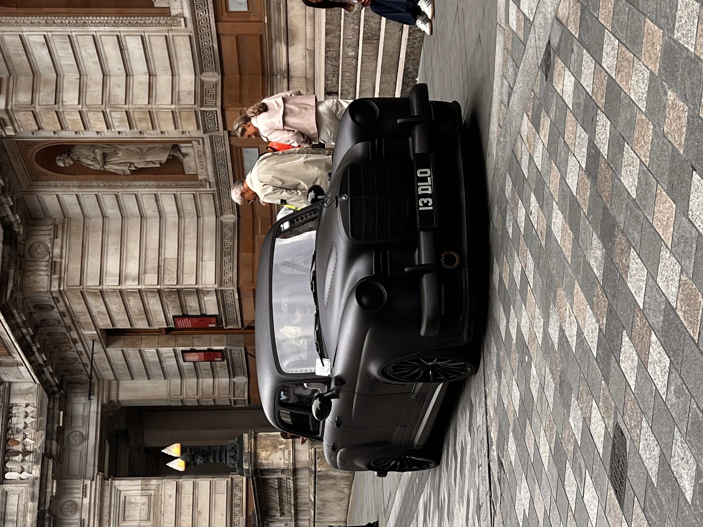

Wyprawa do Londynu
Wyprawa do Londynu to doskonały sposób na poznanie jednego z najciekawszych miast na świecie. Londyn to miasto pełne historii, kultury i nowoczesności. Wraz z moim synem postanowiliśmy odwiedzić kilka znanych miejsc, takich jak Mayfair czy Knightsbridge gdzie mieliśmy szansę natknąć się na super samochody. Byliśmy również zachwyceni różnorodnością samochodów, które mogliśmy zobaczyć na ulicach Londynu, od klasycznych modeli po nowoczesne samochody elektryczne. Nasza wyprawa do Londynu miała na celu uchwycić na zdjęciach niesamowite samochody, którymi się fascynujemy. Postanowiłem umieścić jeden z nich na mojej stronie internetowej.
Autor: Michał Zagdański

| Model | Moc | Przyspieszenie 0-100 km/h |
|---|---|---|
| Mercedes-Benz Ponton C63 AMG V8 | 457 KM | 4,3 s |